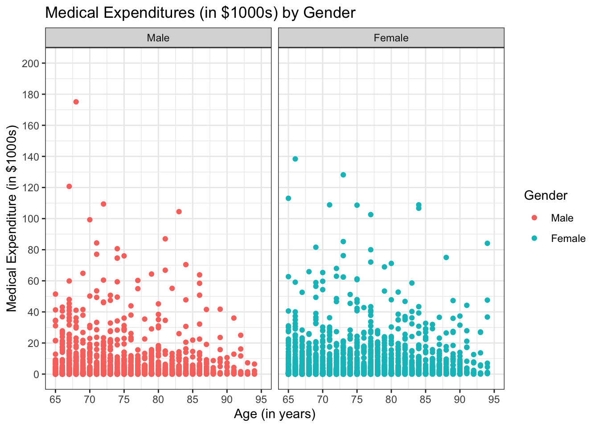
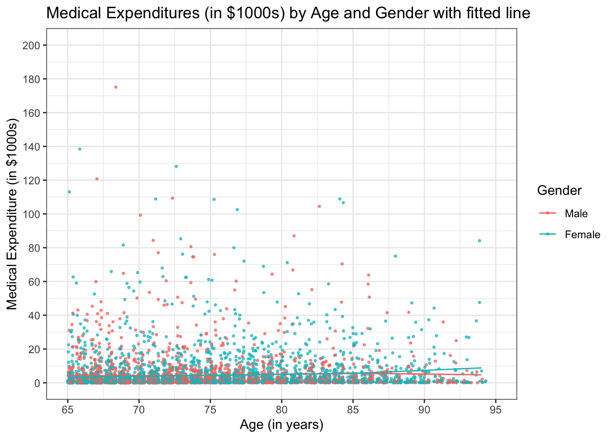
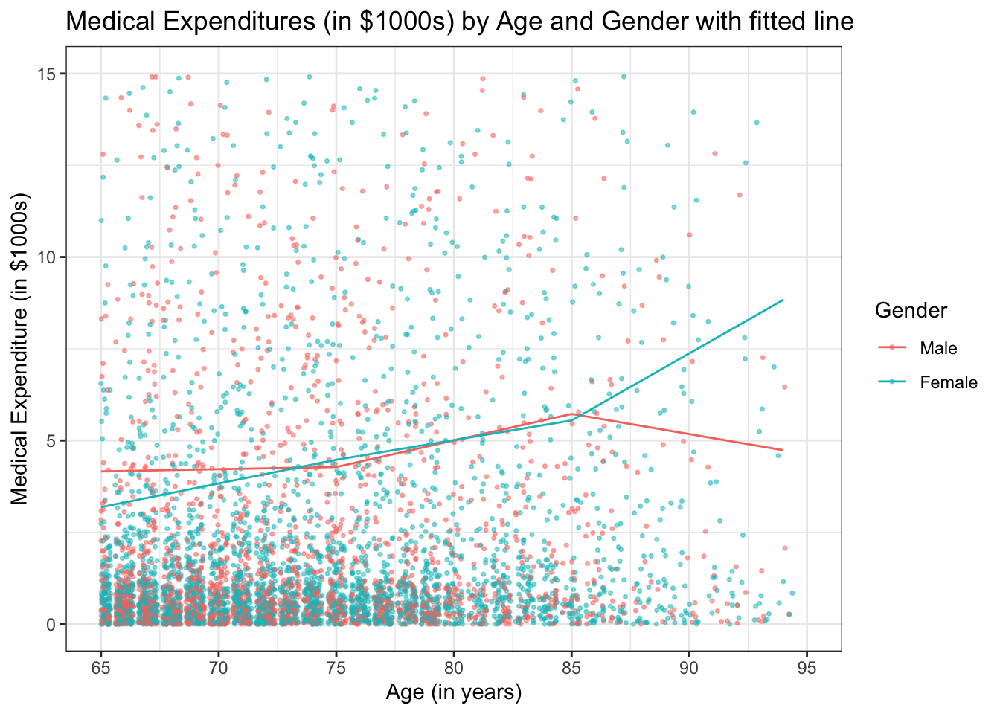
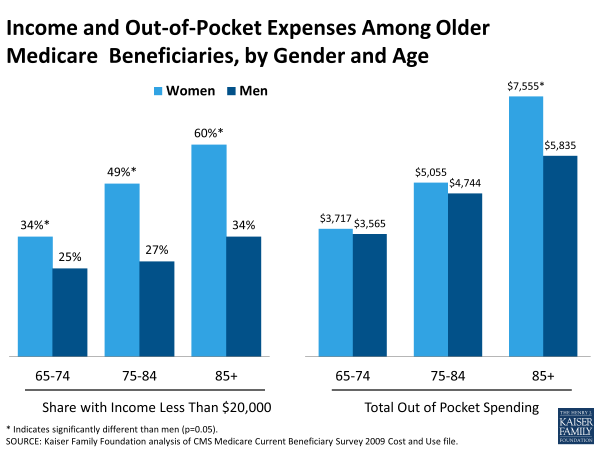

Healthcare costs for employed women in the United States are estimated to be $15 billion greater than for employed men from the age of 19 to 64 in 2023, according to research by Deloitte (Closing the Benefit Gap to Advance Women’s Health Equity 2023). This economic strain contributes to the existing pay gap between genders and continues even when services related to maternity are not considered. What about elderly people above 65 years old who are more likely to face severe and chronic diseases? Will the disparity persist, or even exaggerate, for older man and women?
Figure 1: Healthcare benefit gap in 2023
Question:
For this analysis, I am interested in the question of whether older (at least 65 years of age) men and women of the same age use roughly the same quantity of medical services measured by their annual medical expenditures.
Audience:
This analysis can help healthcare policymakes to better understand how medical needs and expenses differ by gender among the elderly so that they can tailor more effective and equitable healthcare policies.
Dataset:
The data of annual medical expenditures for men and women from 65 to 95 years of age were obtained and adjusted from the 1987 National Medical Expenditure Survey(Scientific Data NMES 2016). To answer the research question above, I used three variables extracted from the data set: participant’s age (lastage), gender (female), and total health care expenditures (totalexp). A full list of data dictionary can be found here.
Note
The data and analysis are adopted from homework of Methods in Biostatistics.
Analysis:
Step 0: data set preparation.
Select variables of interest (i.e., age, gender, medical expenditures) and create variables for linear spline with knots at 75 and 85 years of age.
library(ggplot2)ggplot(data = d, aes(x = lastage, y = totalexp /1000, color = Gender)) +geom_point() +facet_wrap(~ Gender) +labs(x ="Age (in years)", y ="Medical Expenditure (in $1000s)", title ="Medical Expenditures (in $1000s) by Gender") +scale_y_continuous(breaks=seq(0,200,20),limits=c(0,200)) +scale_x_continuous(breaks=seq(65,95,5), limits=c(65,95)) +theme_bw()

Figure 2: Medical expenditures in thousands of dollars by gender for participants above 65 years old.
Step 2: linear regression model with age and gender
First, we fit a full linear regression model with age, linear splines with knots at 75 and 85 years of age, gender, and interactions between predictors.
Note that constant variance (homoscedasticity) is assumed in this linear regression model.
Code
library(broom)mlr.fit <-lm(totalexp ~ (agem65 + age_sp1 + age_sp2) + Gender + Gender*(agem65 + age_sp1 + age_sp2), data = d)tidy_mlr.fit <-tidy(mlr.fit)tidy_mlr.fit <- tidy_mlr.fit[, c("term", "estimate", "std.error", "statistic", "p.value")]kable(tidy_mlr.fit, caption ="Linear model coefficients of the full model", digits =3, format ="html", col.names =c("Term", "Estimate", "Std. Error", "t value", "Pr(>|t|)")) %>%kable_styling(bootstrap_options =c("striped", "hover"), full_width = F, position ="left")
Linear model coefficients of the full model
Term
Estimate
Std. Error
t value
Pr(>|t|)
(Intercept)
4159.387
473.406
8.786
0.000
agem65
11.857
75.829
0.156
0.876
age_sp1
132.811
153.871
0.863
0.388
age_sp2
-254.602
327.083
-0.778
0.436
GenderFemale
-974.517
614.701
-1.585
0.113
agem65:GenderFemale
117.222
98.182
1.194
0.233
age_sp1:GenderFemale
-154.604
197.009
-0.785
0.433
age_sp2:GenderFemale
512.462
406.299
1.261
0.207
agem65: age after centered at 65
age_sp1: the number of years if a person is over 75; if not, age_sp1 = 0
age_sp2: the number of years if a person is over 85; if not, age_sp2 = 0
GenderFemale: indicator of female
Code
d$observed_y = d$totalexp /1000d$predicted_y = mlr.fit$fitted.values /1000ggplot(d, aes(x = lastage, y = observed_y, color=Gender)) +geom_jitter(alpha =0.7, size =0.6) +# use jittered points for better visualization geom_line(aes(x = lastage, y = predicted_y)) +scale_y_continuous(breaks=seq(0,200,20),limits=c(0,200)) +scale_x_continuous(breaks=seq(65,95,5),limits=c(65,95)) +labs(x ="Age (in years)", y ="Medical Expenditure (in $1000s)", title ="Medical Expenditures (in $1000s) by Age and Gender with fitted line") +theme_bw()

Figure 3: Medical expenditures in thousands of dollars by gender for participants above 65 years old, with the fitted lines estimated from the full linear regression model.
geom_jitter to plot jittered points for better visualization
Zoom in on the plot to show the average medical expenditures for females and males across age.
Code
ggplot(d, aes(x = lastage, y = observed_y, color=Gender)) +geom_jitter(alpha =0.5, size =0.6) +geom_line(aes(x = lastage, y = predicted_y)) +scale_y_continuous(breaks=seq(0,15,5),limits=c(0,15)) +scale_x_continuous(breaks=seq(65,95,5),limits=c(65,95)) +labs(x ="Age (in years)", y ="Medical Expenditure (in $1000s)", title ="Medical Expenditures (in $1000s) by Age and Gender with fitted line") +theme_bw()

Figure 4: Zoomed in plot of medical expenditures in thousands of dollars by gender for participants above 65 years old, with the fitted lines estimated from the full linear regression model.
Plot expected difference between women and men in expenditures as a function of age.
Figure 5: Expected difference between women and men in medical expenditures as a function of age. The dotted line indicates no difference. 95% confidence interval is illustrated in the shaded region.
Step 3: linear regression model with age
Further, we want to test the null hypothesis that on average, males and females use the same quantity of medical services; i.e. are the mean expenditures at any age the same for males and females?
\[
\begin{align*}
H_0: & \ \beta_4 = \beta_5 = \beta_6 = \beta_7 = 0 \\
H_a: & \ \text{at least one of } \beta_4, \beta_5, \beta_6, \text{ or } \beta_7 \text{ is not zero.}
\end{align*}
\]
We can fit a reduced a model with only age-related predictors:
A likelihood ratio test showed that the reduced model and the full model are not significantly different from each other (\(p=0.2715\)), indicating we fail to reject the null hypothesis and that the mean expenditures at any age are the same for males and females.
Results and Summary
In this example analysis, we utilized the data from 1987 National Medical Expenditure Survey (NMES) to examine the annual change of total medical expenditure for older people (from age 65 to 94) and its relationship with sex. We first fitted a linear spline regression model on total medical expenditure with age and sex and the interaction between the two factors. The regression result showed that none of the predictors of age and sex were significant except for the intercept, even though the scatter plot indicated some disparity between male and female at age 65 - 75 and above 85 (Figure 4). The 95% confidence interval for estimated difference in average expenditures comparing men and women as a function of age suggested no significant difference due to sex (Figure 5). We performed a likelihood ratio test to compare the full model with a reduced model excluding the factor sex and concluded that we failed to reject the null hypothesis that men and women have the same quantity of medical expenditures at any age.
Important
This analysis is based on the assumption that residuals are normally distributed and homoscedastic, which requires further validation. If such assumptions are violated, standard errors and confidence intervals are likely biased, and a more appropriate analysis approach need to be adapted.
However, more recent analyses indeed demonstrated noticeable discrepancy between female and male in healthcare expenses. The Kaiser Family Foundation analysis of CMS Medicare Current Beneficiary Survey 2009 Cost and Use file (Medicare’s Role for Older Women 2019) showed that out-of-pocket spending by elder female is higher than that by male while more proportion of women had annual incomes below $20,000 compared to men (Figure 6). Thus, it is important for health policymakers to consider various factors regarding medical expenditures, such as socioeconomic status and etc., before coming to any conclusions.

Figure 6: Income and out-of-pocket expenses among older medicare beneficiaries, by gender and age
---title: "Example analysis"author: "Jianing Yao"bibliography: reference.bibformat: html: code-fold: true code-tools: true code-summary: "Show me code" css: styles.css---### Background:Healthcare costs for employed women in the United States are estimated to be \$15 billion greater than for employed men from the age of 19 to 64 in 2023, according to research by Deloitte [@Deloitte]. This economic strain contributes to the existing pay gap between genders and continues even when services related to maternity are not considered. What about elderly people above 65 years old who are more likely to face severe and chronic diseases? Will the disparity persist, or even exaggerate, for older man and women?{#fig:healthcareCost width="500px" fig-cap="Figure 1: Healthcare spending summary in 2023"}### Question:For this analysis, I am interested in the question of whether older (at least 65 years of age) men and women of the same age use roughly the same quantity of medical services measured by their annual medical expenditures.### Audience:This analysis can help healthcare policymakes to better understand how medical needs and expenses differ by gender among the elderly so that they can tailor more effective and equitable healthcare policies.### Dataset:The data of annual medical expenditures for men and women from 65 to 95 years of age were obtained and adjusted from the [1987 National Medical Expenditure Survey](https://wonder.cdc.gov/wonder/sci_data/surveys/nmes/nmes.asp)[@NMES]. To answer the research question above, I used three variables extracted from the data set: participant's age (*lastage*), gender (*female*), and total health care expenditures (*totalexp*). A full list of data dictionary can be found [here](https://wonder.cdc.gov/wonder/sci_data/surveys/nmes/type_txt/puf18.asp).::: callout-noteThe data and analysis are adopted from homework of Methods in Biostatistics.:::### Analysis:#### Step 0: data set preparation.**Select variables of interest (i.e., age, gender, medical expenditures) and create variables for linear spline with knots at 75 and 85 years of age.**```{r, message=FALSE}library(dplyr)load("./data/nmes.rdata")d <- nmes %>%select(names(.)[c(2,3,15)]) %>%filter(., lastage>=65) %>%mutate(agem65 = lastage -65,age_sp1 =ifelse(lastage-75>0, lastage -75, 0),age_sp2 =ifelse(lastage-85>0, lastage -85, 0),Gender =factor(ifelse(male ==0, 1, 0)))d$Gender <-factor(d$Gender,levels=c(0,1),labels=c("Male","Female"))d <- d[complete.cases(d),]d <- d[order(d$lastage),]```#### Step 1: exploratory analysis**Compute mean and standard deviation for age and medical expenditures for female and male.**```{r, message=FALSE}library(knitr)library(kableExtra)summary <- d %>%group_by(Gender) %>%summarise(mean_age =mean(lastage), sd_age =sd(lastage),mean_exp =mean(totalexp),sd_exp =sd(totalexp)) %>%ungroup()colnames(summary) <-c('Gender', 'Age mean', 'Age sd', 'Expenditure mean', 'Expenditure sd')summary_table <-kable(summary, format ="html", table.attr ="class='table table-striped'") %>%kable_styling(bootstrap_options =c("striped", "hover", "condensed", "responsive"))summary_table``````{r fig.cap="Figure 2: Medical expenditures in thousands of dollars by gender for participants above 65 years old."}library(ggplot2)ggplot(data = d, aes(x = lastage, y = totalexp /1000, color = Gender)) +geom_point() +facet_wrap(~ Gender) +labs(x ="Age (in years)", y ="Medical Expenditure (in $1000s)", title ="Medical Expenditures (in $1000s) by Gender") +scale_y_continuous(breaks=seq(0,200,20),limits=c(0,200)) +scale_x_continuous(breaks=seq(65,95,5), limits=c(65,95)) +theme_bw()```#### Step 2: linear regression model with age and gender**First, we fit a full linear regression model with age, linear splines with knots at 75 and 85 years of age, gender, and interactions between predictors.**General MLR model:$$\begin{align*}Y_i = & \ \beta_0 + \beta_1(age_i-65) + \beta_2(age_i-75)^+ + \beta_3(age_i-85)^+ \\ & + \beta_4\text{female}_i + \beta_5\text{female}_i \cdot (age_i-65) \\ & + \beta_6\text{female}_i \cdot (age_i-75)^+ + \beta_7\text{female}_i \cdot (age_i-85)^+ + \epsilon_i \text{ , } \\ & \ \text{where } \epsilon_i \sim N(0, \sigma^2)\end{align*}$$::: {.callout-caution title="Model Assumption"}Note that constant variance (homoscedasticity) is assumed in this linear regression model.:::```{r}library(broom)mlr.fit <-lm(totalexp ~ (agem65 + age_sp1 + age_sp2) + Gender + Gender*(agem65 + age_sp1 + age_sp2), data = d)tidy_mlr.fit <-tidy(mlr.fit)tidy_mlr.fit <- tidy_mlr.fit[, c("term", "estimate", "std.error", "statistic", "p.value")]kable(tidy_mlr.fit, caption ="Linear model coefficients of the full model", digits =3, format ="html", col.names =c("Term", "Estimate", "Std. Error", "t value", "Pr(>|t|)")) %>%kable_styling(bootstrap_options =c("striped", "hover"), full_width = F, position ="left")```::: column-margin- `agem65`: age after centered at 65- `age_sp1`: the number of years if a person is over 75; if not, age_sp1 = 0- `age_sp2`: the number of years if a person is over 85; if not, age_sp2 = 0- `GenderFemale`: indicator of female:::```{r fig.cap="Figure 3: Medical expenditures in thousands of dollars by gender for participants above 65 years old, with the fitted lines estimated from the full linear regression model.", warning=FALSE}d$observed_y = d$totalexp /1000d$predicted_y = mlr.fit$fitted.values /1000ggplot(d, aes(x = lastage, y = observed_y, color=Gender)) +geom_jitter(alpha =0.7, size =0.6) +# use jittered points for better visualization geom_line(aes(x = lastage, y = predicted_y)) +scale_y_continuous(breaks=seq(0,200,20),limits=c(0,200)) +scale_x_continuous(breaks=seq(65,95,5),limits=c(65,95)) +labs(x ="Age (in years)", y ="Medical Expenditure (in $1000s)", title ="Medical Expenditures (in $1000s) by Age and Gender with fitted line") +theme_bw()```::: column-margin`geom_jitter` to plot jittered points for better visualization:::**Zoom in on the plot to show the average medical expenditures for females and males across age.**```{r fig.cap="Figure 4: Zoomed in plot of medical expenditures in thousands of dollars by gender for participants above 65 years old, with the fitted lines estimated from the full linear regression model.", warning=FALSE}ggplot(d, aes(x = lastage, y = observed_y, color=Gender)) +geom_jitter(alpha =0.5, size =0.6) +geom_line(aes(x = lastage, y = predicted_y)) +scale_y_continuous(breaks=seq(0,15,5),limits=c(0,15)) +scale_x_continuous(breaks=seq(65,95,5),limits=c(65,95)) +labs(x ="Age (in years)", y ="Medical Expenditure (in $1000s)", title ="Medical Expenditures (in $1000s) by Age and Gender with fitted line") +theme_bw()```**Plot expected difference between women and men in expenditures as a function of age.**```{r fig.cap="Figure 5: Expected difference between women and men in medical expenditures as a function of age. The dotted line indicates no difference. 95% confidence interval is illustrated in the shaded region.", warning=FALSE}age =seq(65,95)agesp1 =ifelse(age>=75,age-75,0)agesp2 =ifelse(age>=85,age-85,0)age65 = age-65AGE =rbind(rep(1,31),age65,agesp1,agesp2)expectDiff=t(AGE)%*%coefficients(mlr.fit)[5:8]V =vcov(mlr.fit)[5:8,5:8]V.big =t(AGE)%*%V%*%AGEvar =diag(V.big)diffage =data.frame(age,expectDiff = expectDiff/1000,std =sqrt(var),min = (expectDiff-1.96*sqrt(var))/1000,max =(expectDiff+1.96*sqrt(var))/1000)ggplot(diffage,aes(x = age,y = expectDiff)) +geom_line(data = diffage) +geom_hline(yintercept =0,col ='blue',data= diffage, linetype ="dashed") +geom_ribbon(aes(ymin=min,ymax =max),alpha =0.5,data= diffage) +scale_y_continuous(breaks=seq(-3,12,1),limits=c(-3,12)) +scale_x_continuous(breaks=seq(65,95,5),limits=c(65,95)) +labs(y ="Difference (Female - Male, in $1000s)", x ="Age (in years)") +theme_bw() ```#### Step 3: linear regression model with age**Further, we want to test the null hypothesis that on average, males and females use the same quantity of medical services; i.e. are the mean expenditures at any age the same for males and females?**$$\begin{align*}H_0: & \ \beta_4 = \beta_5 = \beta_6 = \beta_7 = 0 \\H_a: & \ \text{at least one of } \beta_4, \beta_5, \beta_6, \text{ or } \beta_7 \text{ is not zero.}\end{align*}$$**We can fit a reduced a model with only age-related predictors:**$$\begin{align*}Y_i = & \ \beta_0 + \beta_1(age_i-65) + \beta_2(age_i-75)^+ + \beta_3(age_i-85)^+ + \epsilon_i \text{ , } \\ & \ \text{where } \epsilon_i \sim N(0, \sigma^2)\end{align*}$$```{r, message=FALSE}mlr.fit0 <-lm(totalexp ~ agem65 + age_sp1 + age_sp2, data = d)tidy_mlr.fit0 <-tidy(mlr.fit0)tidy_mlr.fit0 <- tidy_mlr.fit0[, c("term", "estimate", "std.error", "statistic", "p.value")]kable(tidy_mlr.fit0, caption ="Linear model coefficients of the reduced model", digits =3, format ="html", col.names =c("Term", "Estimate", "Std. Error", "t value", "Pr(>|t|)")) %>%kable_styling(bootstrap_options =c("striped", "hover"), full_width = F, position ="left")``````{r, message=FALSE}# likelihood ratio testlibrary(lmtest)lrtest(mlr.fit0, mlr.fit)```**A likelihood ratio test showed that the reduced model and the full model are not significantly different from each other ($p=0.2715$), indicating we fail to reject the null hypothesis and that the mean expenditures at any age are the same for males and females.**### Results and SummaryIn this example analysis, we utilized the data from 1987 National Medical Expenditure Survey (NMES) to examine the annual change of total medical expenditure for older people (from age 65 to 94) and its relationship with sex. We first fitted a linear spline regression model on total medical expenditure with age and sex and the interaction between the two factors. The regression result showed that none of the predictors of age and sex were significant except for the intercept, even though the scatter plot indicated some disparity between male and female at age 65 - 75 and above 85 (Figure 4). The 95% confidence interval for estimated difference in average expenditures comparing men and women as a function of age suggested no significant difference due to sex (Figure 5). We performed a likelihood ratio test to compare the full model with a reduced model excluding the factor sex and concluded that we failed to reject the null hypothesis that men and women have the same quantity of medical expenditures at any age.::: {.callout-important collapse="false"}This analysis is based on the assumption that residuals are normally distributed and homoscedastic, which requires further validation. If such assumptions are violated, standard errors and confidence intervals are likely biased, and a more appropriate analysis approach need to be adapted.:::However, more recent analyses indeed demonstrated noticeable discrepancy between female and male in healthcare expenses. The Kaiser Family Foundation analysis of CMS Medicare Current Beneficiary Survey 2009 Cost and Use file [@KFF] showed that out-of-pocket spending by elder female is higher than that by male while more proportion of women had annual incomes below \$20,000 compared to men (Figure 6). Thus, it is important for health policymakers to consider various factors regarding medical expenditures, such as socioeconomic status and etc., before coming to any conclusions.{width="500px"}### Functions- `dplyr`: `select()`, `filter()`, `mutate()`, `group_by()`,`summarise()`- `ggplot2`: `geom_point()`, `geom_jitter`, `geom_line`, `geom_hline`, `geom_ribbon`::: {#bibliography}:::